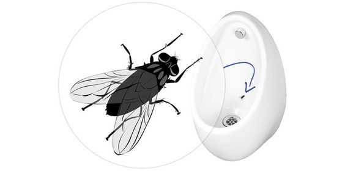
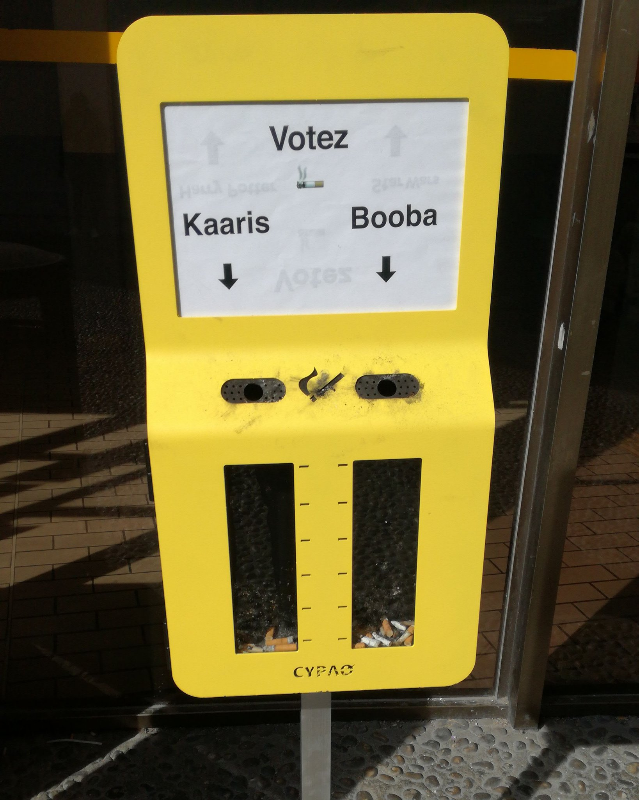

Le Nudge (ou “coup de coude”) est un concept comportemental qui consiste à inciter un individu à avoir un comportement vertueux, tout en utilisant son irrationalité. Cette technique marketing est énormément utilisée dans notre vie de tous les jours, et ce par différents acteurs.
Qu’est-ce que le Nudge
Conceptualisé en 2008 par Richard Thaler et Cass Sunstein dans leur livre Nudge, ce concept se base sur l’irrationalité des humains afin de les inciter à faire quelque chose de bon pour la société. On parle également de paternalisme libéral, ce qui sous-entend que les individus sont certes libres, mais également relativement contrôlés (ici incités) via cette notion de “paternalisme”. A l’instar du Marketing Sensoriel, le Nudge fait partie de l’économie comportementale. Si on prend l’exemple bien connu de la photo ci-dessous, on comprend vite de quoi il s’agit.
La mouche dans l’urinoir, Source : Pinterest
Pour la petite histoire, l’aéroport d’Amsterdam accueillait il y a déjà quelques années un nombre considérable de voyageurs quotidiens, ce qui implique des frais d’entretien importants. Ceci est également valable pour les toilettes, où les usagers n’adoptaient pas forcément un comportement respectueux, particulièrement chez les hommes. Alors la direction a eu l’idée de mettre en place un dispositif : un sticker de mouche positionné au sein même de l’urinoir. L’objectif? Inciter les hommes à viser la mouche en urinant, afin de garder les toilettes relativement propres. Et ça fonctionne ! Les éclaboussures autour des urinoirs auraient été réduites de 80%. Cela a permis de réduire les coûts de nettoyage pour un coût de mise en place quasi nul.
Pourtant, la démarche n’est pas rationnelle : les hommes n’avaient aucun intérêt si ce n’est pour une satisfaction personnelle, de viser la mouche. Et c’est en cela qu’on mise sur l’irrationalité des humains.
Quelques exemples de Nudge
Si le Nudge est souvent utilisé par les entreprises, il était à la base très prisé des pouvoirs publics.
Une incitation à jeter ses mégots au bon endroit. Source : Twitter
Ainsi, en 2011, Stockholm, pour inciter la population à utiliser des escaliers dans le métro plutôt que les escalators, a mis en place des escaliers musicaux. Les usagers, emballés par l’installation, ont alors délaissé l’escalator et de cette manière ont été amenés à effectuer un effort physique.
De plus en plus, les nudges sont utilisés à des fins de préservation des ressources et de l’environnement. Il n’est pas rare de voir fleurir sur les murs des entreprises ou écoles des stickers rappelant d’éteindre la lumière ou de mettre son gobelet en carton dans un bac prévu à cet effet. Et vous, remarquez-vous les nudges qui vous entourent?
Cet article a été rédigé par Johann Pillet
Pour aller plus loin :
- Théorie du Nudge
- Livre : **Nudge - La méthode douce pour inspirer la bonne décision_ (en anglais, Nudge: Improving Decisions about Health, Wealth, and Happiness)**_